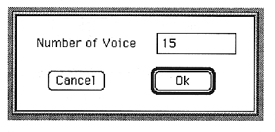
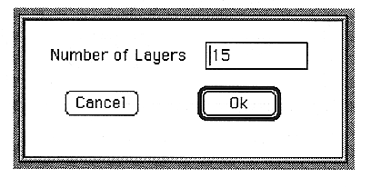
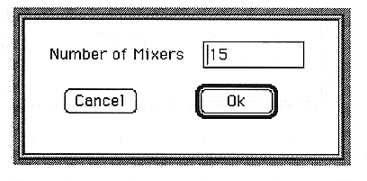

Return to previous page ｜ Return to menu ｜ Go to next page
-
Number menu
- Used to increase the number of each.
-
Voice
- Set the number of voices. The following dialog box opens.

You cannot set a value less than the current number of voices.
●Layer
- Set the number of layers. The following dialog box opens.

You cannot set a value smaller than the current number of layers.
-
Mixer
- Set the number of mixers. The following dialog box opens.

You cannot set a value smaller than the current number of mixers.
Return to previous page ｜ Return to menu ｜ Go to next page